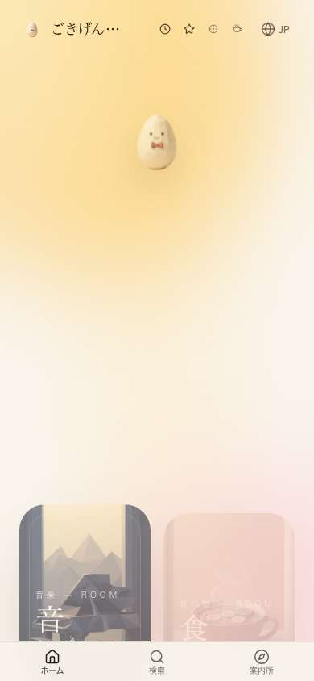
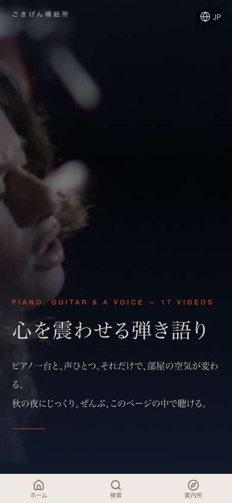
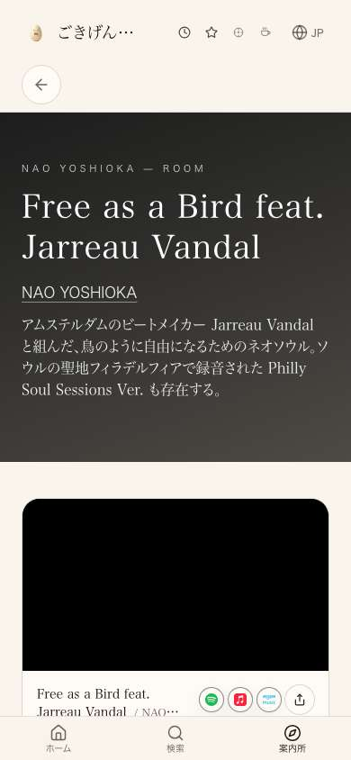

共有資料の一覧 ／ 確認ページ #124961 124961番：白飛びの解消（ページの切り替えで白い画面を挟まない）
#124961 124961番：白飛びの解消（ページの切り替えで白い画面を挟まない）
2026-10-19 実装・main合流・本番(GitHub Pages)反映まで実測確認
本番 joy-relief-station.lovable.app をヘッドレスChromeで実測（390x844・Slow4G・CPU4倍遅く）。トップ→案内所→曲→マガジン→戻る、トップ→扉→棚→曲→言語切替→戻る、の主要導線で「画面がほぼ1色になる白飛び」はほぼ検出されなかった（既存の2026-10-17対策=コミットd9054adeb・1d4301274がよく効いている）。残っていた穴＝静的ページ（マガジン記事9本＋AI最前線マガジン一覧）の<html>要素に背景色をインラインで追加し、CSS読み込み待ちの白を塞いだ（見た目は変えていない）。
② 数字
0件主要導線8ステップ中「まっさら(白飛び)」検出件数（本番・変更前実測）
10本背景色インライン化した静的ページ（マガジン9本＋AI最前線マガジン一覧）
③ 実データでのスクリーンショット
トップ(変更前実測・最初のフレームから白なし)
見た目は変更していません（インラインstyle追加のみ）
マガジン記事への遷移直後(最初のフレーム)
黒背景のまま最初から表示・白飛びなし
言語切替直後
背景色のまま切替・白飛びなし
④ 押せるリンク
⑤ 何をどう確かめたか
| 確認項目 | 結果 |
|---|
| トップ→案内所→曲→マガジン→戻る→戻る→トップ(本番実測) | まっさら0/8区間 |
| トップ→扉→棚→曲→言語切替en→ja→戻る→戻る→トップ(本番実測) | まっさら0/9区間 |
| 静的マガジン9本+AI最前線マガジン一覧のhtml要素背景色 | main合流・push済み(45ce487ed, 1de82c01f) |
| Lovable公開 | 鍵が切れている(2026-10-14以降)ため自動で押せず。公開待ち |